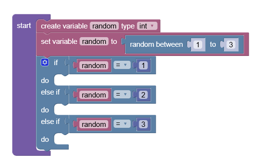

Schere, Stein, Papier
In diesem Abschnitt bringen wir der Hand bei, „Schere, Stein, Papier“ zu spielen. Das Ziel ist, dass die Hand zufällig eine der drei Posen ausführt.
Setup
Erstelle zunächst eine start- und eine update-Funktion. In die update-Funktion fügst du eine neue int-Variable mit dem Namen random ein.
Zufallswert setzen
Weise der Variable random nun einen zufälligen Wert zwischen 1 und 3 zu.
Zahl prüfen
Verwende anschließend eine if-Bedingung, um zu prüfen, welche Zahl gewählt wurde.

Handbewegung umsetzen
Ergänze nun innerhalb der jeweiligen if-Bedingungen den Code, der die passende Handbewegung für Schere, Stein und Papier ausführt.